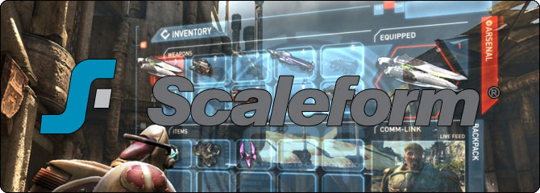

UDN
Search public documentation:
ScaleformKR
English Translation
日本語訳
中国翻译
Interested in the Unreal Engine?
Visit the Unreal Technology site.
Looking for jobs and company info?
Check out the Epic games site.
Questions about support via UDN?
Contact the UDN Staff
日本語訳
中国翻译
Interested in the Unreal Engine?
Visit the Unreal Technology site.
Looking for jobs and company info?
Check out the Epic games site.
Questions about support via UDN?
Contact the UDN Staff
UE3 홈 > 유저 인터페이스와 HUD > 스케일폼 GFx
스케일폼 GFx
문서 변경내역: Jason Bestimt 작성. Nick Whiting 업데이트. 홍성진 번역.

- Setting Up Scaleform GFx KR 스케일폼 GFx 셋업 - Adobe Flash Professional 에서 UE3 용 스케일폼 셋업하기 입니다.
- Scaleform Quick Start KR 스케일폼 퀵 스타트 - 언리얼 엔진 3 용 기본 스케일폼 UI 만들기 입니다.
- Scaleform Workflow KR 스케일폼 작업방식 - UE3 용 스케일폼 UI 제작 작업방식 꼼수입니다.
- Scaleform Terminology KR 스케일폼 용어 - 스케일폼와 플래시에 흔히 사용되는 용어와 개념입니다.
- Scaleform Technical Guide KR 스케일폼 테크니컬 가이드 - 언리얼 엔진 3 의 코드를 통해 스케일폼 작업과 제어를 하는 방법 안내서입니다.
- Scaleform ActionScript Best Practices KR 스케일폼 ActionScript 우수 사례 - 스케일폼으로 ActionScript 를 작성할 때의 지침서입니다.
- Scaleform Content Guide KR 스케일폼 콘텐츠 가이드 - 언리얼 엔진 3 에서 사용할 스케일폼 UI 제작과 셋업 방법 안내서입니다.
- Scaleform Import KR 스케일폼 GFx 임포트 파이프라인 - 스케일폼 UI 에 쓸 플래시 씬과 콘텐츠를 UE3 로 임포트하는 방법 안내서입니다.
- Scaleform Best Practices KR 스케일폼 GFx 콘텐츠 실전 사례 - 스케일폼과 UE3 에 콘텐츠를 최적화시키는 법에 대한 꼼수입니다.
- Scaleform Building UDK UIs KR UDK 스케일폼 UI 만들기 - UDK UI 와 HUD 를 만들고 임포트하는 방법 안내서입니다.
- GFx Volume Status Bar KR 상태바가 포함된 콘트롤 볼륨 추가하기 - 플레이어의 제어권을 상태바로 나타내는 콘트롤 볼륨 추가법 튜토리얼입니다.
- GFx Using Render Targets KR 렌더 타겟 사용법
- GFx Split Screen KR 분할화면 처리 방법
- GFx AScript To Kismet KR 외부 인터페이스 호출이 키즈멧을 거치게 하는 법
- GFx Variable Access KR 외부 SWF 에서의 변수 접근법
- GFx UScript Var Access KR ActionScript 에서 UnrealScript 에 접근하는 법
- GFx Object Array KR ActionScript 에 오브젝트 배열 전하는 법
- GFx Return Functions KR ActionScript 호출에서 반환값 구하는 법
- GFx HUD Trigger KR 트리거를 건드렸을 때 HUD 에 무언가 표시하는 법
- GFx Kismet Input KR 키즈멧에서 키보드 입력을 캡처하는 법 - UnrealScript 를 사용하지 않고 키즈멧에서 키보드 입력을 캡처하는 법 예제입니다.
- GFx XBox Input KR 스케일폼에서 XBox360 입력을 캡처하는 법
- GFx UDKFrontEnd Guide KR UDK Front End 이해하기 - GFxUDKFrontEnd 작동 방식에 대한 하이 레벨 관점에서의 단계별 설명서입니다.
- GFx Positioning Guide KR 뷰 위치잡기 - SetViewScaleMode, SetAlignment, SetViewport 함수에 대한 하이 레벨 관점에서의 설명서입니다.
- GFx Key Filters KR 키 필터 - bCaptureInput, AddCaptureKey, AddFocusIgnoreKey 함수에 대한 대한 하이 레벨 관점에서의 설명서입니다.
- GFx Create Cursor KR 마우스 커서 만드는 법 - HUD 에 마우스 커서를 만드는 법에 대한 예제입니다.
- DevelopmentKitGems Creating A Mouse Interface KR 마우스 인터페이스 만들기 - 스케일폼을 사용하여 마우스 인터페이스를 만드는 방법입니다.
- CLIK Check Box KR 체크 박스 값 구하고 설정하는 법
- CLIK INI List KR ini 파일에서 리스트를 채우는 법
- CLIK Multi Col List KR 열이 여럿인 리스트 만드는 법
- CLIK Option Tab View KR 탭 뷰의 옵션 저장하고 불러오기
- CLIK Chat Box KR 단순 채팅 박스 만드는 법
- CLIK Scripted Animation KR ActionScript 나 UnrealScript 에서 tween 애니메이션 만드는 법
- CLIKIconScrollList KR 스크롤 리스트에서 아이콘 표시하는 법
- 스케일폼 UDK 문서 - 공식 스케일폼 4.0 UDK 관련 문서입니다.
- 스케일폼 3Di 플래시 AS2 익스텐션을 사용하여 3D UI 만들기 - 스케일폼 GFx 3.2 이상의 3Di ActionScript 2 익스텐션을 사용하여 3D 공간에서 무비클립을 옮기고 회전하는 법을 설명하는 비디오입니다.
- SWF 임포트하기 - 플래시 콘텐츠를 만들어 UDK 에 임포트할 때의 중요한 규칙 몇 가지를 다루는 비디오입니다.
- 렌더 텍스처와 머티리얼 - UDK 레벨의 BSP 표면에 상호작용형 플래시 콘텐츠를 표시하는 데 필요한 렌더 텍스처와 머티리얼 제작에 대한 비디오입니다.
- BSP 오브젝트에 SWF 추가하기 - BSP 표면 위에 플래시 파일을 추가하는 데 필요한 단계를, 키즈멧 작업방식을 포함해서 다루는 비디오입니다.
- 인풋 캡처하기 - 이 비디오에서 다루는 것은 GFx Capture Key 키즈멧 노드를 사용하여 키보드와 게임 콘트롤러 입력을 플래시 파일로 경유시키는 법입니다. 그런 다음 그 입력을 해석하여 3D 로 무비 클립을 회전시켜 봅니다.
- Invoke ActionScript & FSCommands 사용하기 - 키즈멧의 Invoke ActionsCript 사용법을 다루는 비디오입니다. 이를 통해 UDK 에서 플래시 파일에 있는 ActionScript 함수를 호출할 수 있습니다. FSCommands 를 통해 플래시 파일에서 UDK 로 명령을 되전송하는 것에 대해서도 다룹니다.
- 커스텀 메뉴 만들기 - Scaleform GFx 와 UnrealScript 를 사용하여 커스텀 메뉴 시스템을 만드는 법 기본기를 다루는 비디오입니다.
- 폰트 작업하기 - 플래시와 UDK 2010년 9월 빌드에서 폰트를 제대로 사용하기 위해 알아야 하는 것을 다루는 비디오입니다.
- 스케일폼 HUD 마스터하기
- HUD 개요 - 2010년 9월 UDK 스케일폼 HUD 를 통해 파일별, 애셋별로 알아보는 4부작 시리즈 중 첫 번째 입니다.
- UTGFxHudWrapper.uc - 2010년 9월 UDK 스케일폼 HUD 가 어떻게 만들어졌는지를 설명하는 비디오 그 두 번째 입니다. UTGFxHudWrapper.uc 가 기본적으로 어떻게 구성되어 있는지, HUD 의 일부로 포즈 메뉴를 어떻게 여닫는지도 다룹니다.
- GFxMinimapHud.uc - 1/2 - 2010년 9월 UDK 스케일폼 HUD 가 어떻게 만들어졌는지를 설명하는 비디오 그 세 번째 입니다. GFxMinimapHud 클래스의 전반부와 udk_hud 플래시 파일을 다룹니다.
- GFxMinimapHud.uc - 2/2 - 2010년 9월 UDK 스케일폼 HUD 가 어떻게 만들어졌는지를 설명하는 비디오 그 네 번째 입니다. GFxMinimapHud 클래스 후반부를 다룹니다.
- Getting Started with CLIK CLIK 시작하기 (영문)
- 초기 셋업 - 새로운 CLIK(컴포넌트 경량 인터페이스 키트)를 사용하여 기본적인 프론트 엔드 메뉴 시스템을 빠르게 프로토타이핑하는 법을 안내하는 튜토리얼입니다. 메인 메뉴, 옵션 화면 등이 모두 버튼, 슬라이더, 옵션 스테퍼, 라디오 버튼과 같은 핵심 CLIK 컴포넌트로 구성됩니다.
- 메인 메뉴 셋업 - 메인 메뉴에 기본적인 함수성을 약간 추가해 봅니다.
- 옵션 화면 만들기 - 메인 메뉴에서 옵션 화면으로 이동하는 버튼을 만들고, 첫 옵션에 난이도 설정 옵션 스테퍼를 추가합니다.
- 체크박스, 라디오 버튼, 슬라이더 - 비디오 세팅 체크박스, 라디오 버튼, 볼륨 슬라이더 등 여러가지 컴포넌트를 추가합니다.
- 함수성 추가하기 - OK 와 취소 버튼은 물론, 난이도 세팅 옵션 스테퍼와 라디오 버튼에 약간의 함수성을 추가합니다.
- 변경 유지하기 - OK 버튼이 눌리면 사용자가 변경한 내용이 유지되도록 옵션 화면을 셋업합니다.
- 배경 추가하기 - 튜토리얼 1-6 에서 만든 메뉴 구성 요소들에 스킨을 입히는 방법입니다. 이 과정은 여덟 단계로 나뉘며, 이번 단계에서는 메뉴에 배경 그래픽을 추가합니다.
- 매경 임포트하기 - 어도비 포토샵에서 만든 그래픽을 임포트하여 옵션 화면의 창으로 씁니다. 컴포넌트를 정렬하여 창에 맞추기도, 컴포넌트를 복제하여 스킨을 다르게 입힌 버전을 만들기도 합니다.
- 메인 메뉴 버튼 스킨 입히기 - 메인 메뉴 버튼에 스킨을 입힙니다.
- OK 와 취소 버튼 스킨 입히기 - OK 와 취소 버튼에 스킨을 입힙니다.
- 사운드 슬라이더 스킨 입히기 - 사운드 슬라이더에 스킨을 입힙니다.
- 체크박스 스킨 입히기 - 비디오 세팅 체크박스에 스킨을 입힙니다.
- 라디오 버튼 스킨 입히기 - 비디오 세팅 라디오 버튼에 스킨을 입힙니다.
- 옵션 스테퍼 스킨 입히기 - 난이도 옵션 스테퍼에 스킨을 입힙니다.
- 스케일폼 유저 인터페이스 디자인 - MIGS 2011 에서 열린 언리얼 유니버시티에서, 매튜 도일의 라이브 강연입니다.
스케일폼 GFx 통합
- 3Di 렌더링 포함 GFx 런타임 플레이어 (현재 플래시 8이, 곧 플래시 10이 지원됩니다.)
- CLIK 플래시 UI 프레임워크
- 아시아 언어 채팅 지원용 스케일폼 IME
- 성능 및 메모리용 AMP 프로파일러
- 게임 UI 샘플 - HUD, 메뉴, 3D 인벤토리, 로딩 화면
- 문서, 비디오, 데모
- Scaleform Video 는 UE3 / UDK 에 포함되지 않습니다. 추가 비용을 들여 플래시 콘텐츠에 비디오 솔루션을 통합시키려는 (소스 포함) UE3 라이선시께서는 스케일폼 세일즈 팀과 계약하여 Scaleform Video 를 추가할 수 있습니다. 주: Scaleform Video 를 통합하려면 소스 코드 접근 권한이 필요하기에 UDK 사용자는 사용하실 수 없습니다.
- 콘텐츠 저작 도구. 어도비 플래시 호환 콘텐츠를 저작할 방법이 있어야 할 겁니다. 스케일폼은 어도비 크리에이티브 스위트의 일부로 포함된 어도비 플래시 툴셋으로 제작한 콘텐츠에 대해서는 공식적으로 지원합니다. Sothink SWF Quicker 같은 기타 둘을 사용해도 됩니다만, 스케일폼이 공식적으로 지원하지는 않습니다.
지원
- 스케일폼 개발자 사이트 접근 - 최신 스케일폼 문서, 샘플, 비디오
- 스케일폼 수석 기술자들의 이메일 및 전화 직접 지원
- 스케일폼 수석 기술자 및 기타 상용 게임 개발자들과 주선하는 사설 포럼
UDK 예제 UI 파일
CLIK 버튼과 라벨을 사용한 기본 씬
\UnrealEngine3\UDKGame\Flash\example\udk_GFxCLIKBasicScene.fla 참고. 이 문서 위의 예제를 통해 생성된 파일입니다. CLIK 버튼 둘이 들어 있으며, 버튼 클릭을 통해 단일 라벨의 문구를 구동합니다. 버튼이 클릭/눌렸을 때 함수가 실행되도록 설정하는 예제입니다.콘트롤러 버튼 입력 샘플
\UnrealEngine3\UDKGame\Flash\example\udk_GFxControllerButtonInput_Sample.fla 참고. 이 파일은 handleInput의 사용법, 콘트롤러 버튼이 눌렸을 때 함수 구동 및 UI 내부의 액션 설정법을 다룹니다. XBOX 360 콘트롤러 버튼 그래픽이 (UI 내부의 버튼바에 있는 버튼과 비슷한) 실제 선택가능 버튼이 아닌 상태에서 이게 제대로 작동하기 위해선, 투명 CLIK 버튼을 추가하여 초점을 줘야 합니다. 콘트롤러 버튼 눌림 호출명은:
이 파일은 handleInput의 사용법, 콘트롤러 버튼이 눌렸을 때 함수 구동 및 UI 내부의 액션 설정법을 다룹니다. XBOX 360 콘트롤러 버튼 그래픽이 (UI 내부의 버튼바에 있는 버튼과 비슷한) 실제 선택가능 버튼이 아닌 상태에서 이게 제대로 작동하기 위해선, 투명 CLIK 버튼을 추가하여 초점을 줘야 합니다. 콘트롤러 버튼 눌림 호출명은:
- GAMEPAD_A
- GAMEPAD_B
- GAMEPAD_X
- GAMEPAD_Y
- GAMEPAD_R1
- GAMEPAD_R2
- GAMEPAD_R3
- GAMEPAD_L1
- GAMEPAD_L2
- GAMEPAD_L3
- GAMEPAD_START
- GAMEPAD_BACK
샘플 다운로드
| 5월 QA 릴리스 | 1/8 2/8 3/8 4/8 5/8 6/8 7/8 8/8 |
| 6월 QA 릴리스 | 1/8 2/8 3/8 4/8 5/8 6/8 7/8 8/8 |
| 7월 QA 릴리스 | 1/8 2/8 3/8 4/8 5/8 6/8 7/8 8/8 |
| 8월 QA 릴리스 | 01/11 02/11 03/11 04/11 05/11 06/11 07/11 08/11 09/11 10/11 11/11 |
| 10월 QA 릴리스 | 1/2 2/2 |
| 11월 QA 릴리스 | 1/6 2/6 3/6 4/6 5/6 6/6 |
| 12월 QA 릴리스 | 1/2 2/2 |
| 2011년 1월 QA 릴리스 | 1/2 2/2 |
| 2011년 2월 QA 릴리스 | 1/2 2/2 |
| 2011년 3월 QA 릴리스 | 1/2 2/2 |
| 2011년 4월 QA 릴리스 | 1/2 2/2 |
| 2011년 5월 QA 릴리스 | 1/2 2/2 |
| 2011년 6월 QA 릴리스 | 1/2 2/2 |
| 2011년 7월 QA 릴리스 | 1/2 2/2 |
| 2011년 8월 QA 릴리스 | 1/2 2/2 |
| 2011년 9월 QA 릴리스 | 1/1 1/2 |
| 2011년 10월 QA 릴리스 | 1/1 2/2 |
| 2011년 11월 QA 릴리스 | 1/2 2/2 |
| 2011년 12월 QA 릴리스 | 1/2 2/2 |
| 2012년 1월 QA 릴리스 | 1/4 2/4 3/4 4/4 |